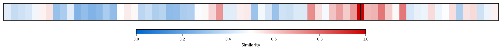
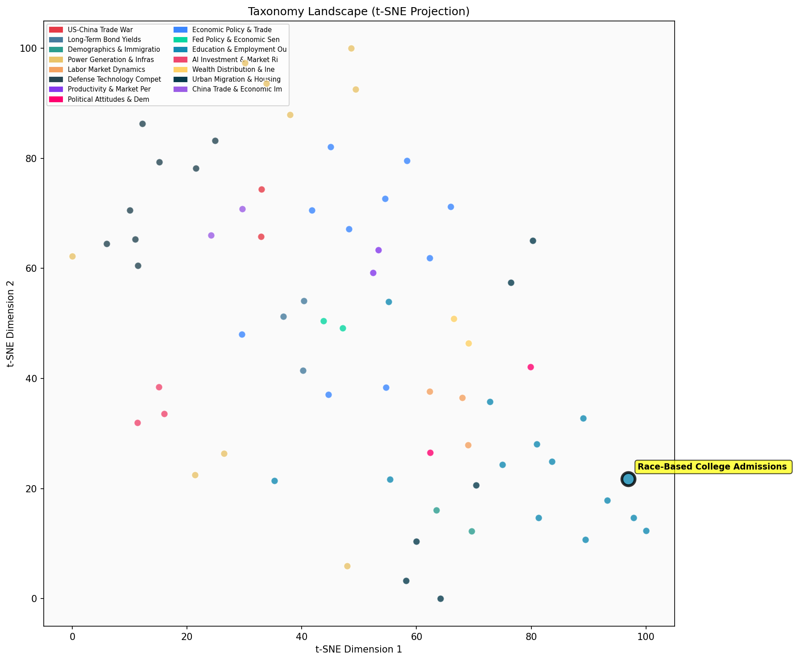

Description
This subcluster examines race-conscious admissions policies and related educational equity debates, featuring survey data on public opinion toward affirmative action, enrollment statistics by racial demographics, and policy proposals affecting selective programs. Articles typically draw from polling organizations like Pew Research, institutional enrollment data, and academic studies analyzing admission outcomes. Unlike sibling clusters focused on academic performance metrics or labor market returns, this subcluster specifically addresses the contentious intersection of race, merit, and access in educational selection processes, encompassing everything from kindergarten gifted programs to elite university admissions and military academy integration policies.
Similarity to All 70 Subclusters
Each cell represents a subcluster. Color intensity shows similarity (blue=low, red=high). Black line marks current subcluster position.
Relationship to Primary Clusters
Average similarity to each of the 15 primary clusters. Larger area = stronger relationship to that cluster.
Taxonomy Landscape
All 70 subclusters positioned by similarity (t-SNE). Current subcluster highlighted with label. Click to enlarge.
Network Connections
Current subcluster at center, connected to related subclusters. Line thickness = similarity strength.
Most Representative Articles
-
1. 73% of Americans, including 62% of Blacks, believe race should not influence college admissions, wit
-
2. .@pewresearch in 2023 has found that 50% of Americans oppose the use of race in higher education adm
-
3. A 2019 Pew survey revealed 73% of Americans oppose using race as a factor in college admissions, yet
-
4. @DerekThompson @TheAtlantic: 65% of America is white, but non-whites now form a majority at Harvard,
-
5. NYC's elite public schools have seen a significant decline in Black and Hispanic student enrollment,
Edge Cases (Boundary Articles)
-
1. Zohran Mamdani, the Democratic front-runner for Mayor in New York City, is campaigning on ending theThis article is borderline because while it involves educational policy that may have racial equity implications (gifted programs often have demographic disparities), it primarily focuses on a specific K-12 program elimination proposal rather than explicitly discussing race-based admissions policies or affirmative action debates. The content is more naturally aligned with early childhood education policy discussions than with the race-conscious admissions and policy debates that define the assigned cluster.
-
2. Blanchflower and Sacerdote found that in 2021-2022, 10% of Dartmouth students reported suicidal ideaThis article is borderline because while it mentions Dartmouth (an elite institution), it focuses on student mental health and financial stress rather than race-based admissions policies or educational equity debates. The content about suicidal ideation and financial stress aligns much better with the alternative cluster about elite college admissions and testing pressures, which would more naturally encompass student wellbeing issues at prestigious institutions.
-
3. West Point professor Kyle Greenberg et al. find that the integration of women into the U.S. militaryThis article is borderline because it focuses on gender integration in military settings rather than race-based college admissions policies, which is the primary focus of the assigned cluster. While it deals with diversity and integration issues in institutional settings, the content is much more aligned with gender-related workplace dynamics than racial equity in higher education admissions.
Original Dendrogram